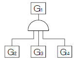
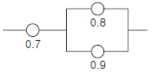

건설안전산업기사 (2005-03-06 기출문제)
1과목: 산업안전관리론
1. 무재해 운동의 이념 3원칙에 해당되지 않는 것은?
- 팀활동의 원칙
- 무의 원칙
- 참가의 원칙
- 선취의 원칙
(정답률: 77%)

2. 인간의 성장발달의 원동력은 개체 밖에 있다고 주장 하며 이를 환경론을 가지고 설명하고 있는 학설은?
- 체제설
- 폭주설
- 생득설
- 경험설
(정답률: 40%)
3. 안전관리자가 수행해야 할 역할 가운데 요구되는 기량에 해당되지 않는 것은?
- 위험의 분석 및 예지
- 재해예방 대책의 결정
- 피해의 최소와 대책
- 안전관리 방침의 설정
(정답률: 48%)
4. 최신화된 안전관리 모델에서 단기의 안전관리의 문제와 고려요건이 아닌 것은?
- 분석
- 장비
- 안전규칙
- 관리양식
(정답률: 15%)
5. 다음은 사고 연쇄이론에 관한 사항이다. 사고를 가져오기 전 단계는?
- 사회환경
- 개인적 결함
- 불안전한 행동과 불안전한 상태
- 상해
(정답률: 94%)
6. 다음 기업내 정형교육 중 TWI의 훈련내용이 아닌 것은?
- 작업방법훈련(JMT)
- 작업지도훈련(JIT)
- 사례연구훈련(CMT)
- 인간관계훈련(JRT)
(정답률: 67%)
7. 안전교육 학습지도법의 단계 중 그 순서가 옳게 나열된것은?
- 준비 —교시 —연합 —총괄 —응용
- 준비 —연합 —교시 —응용 —총괄
- 총괄 —연합 —교시 —응용 —준비
- 응용 —준비 —연합 —총괄 —교시
(정답률: 83%)
8. O.J.T(On the Job Training)의 효과가 아닌 것은?
- 작업요령을 보다 효율적으로 이해하게 된다.
- 작업요령이 몸에 배게되어 작업능률이 향상된다.
- 추지도(追指導) 교육을 효율적으로 추진할 수 있다.
- 다수의 근로자들에게 조직적 훈련을 행하는 것이 가능하다.
(정답률: 77%)
9. 스트레스 주요 원인 중 마음 속에서 일어나는 내적 자극 요인으로 틀린 것은?
- 자존심의 손상
- 업무상의 죄책감
- 현실에서의 부적응
- 직장에서의 대인 관계상의 갈등과 대립
(정답률: 57%)
10. 80명의 근로자가 공장에서 1일 8시간, 연간 300일을 작업하여 연간 근로시간수는 192,000시간이었다. 이 기간 동안에 5명의 부상자를 냈을 때 도수율은 얼마가 되겠는가?
- 7.8
- 17.6
- 26.0
- 36.0
(정답률: 67%)
11. 근로자의 인체에 급성적 상해를 주는 에너지를 방호하기 위해 사용되는 보호구 중에서 연삭기에서 비산하는 물체를 방호하는데 착용하는 보호구는?
- 구명줄
- 산소 마스크
- 보안경
- 절연장갑
(정답률: 66%)
12. 다음 중 인간의 착오를 일으키는 내적조건을 설명한 것과 관계가 적은 것은?
- 감정의 불안정
- 조명의 불충분
- 욕구
- 경험
(정답률: 65%)
13. 알고 있으나 그대로 하지 않는 사람에게는 어떤 안전 교육이 필요한가?
- 태도교육
- 기능교육
- 지식교육
- 실습교육
(정답률: 65%)
14. 안전표지는 색깔로 그 목적을 판별할 수 있다. 안전표지와 색깔이 맞는 것은?
- 금지표지 - 황색
- 경고표지 - 백색
- 지시표지 - 적색
- 안내표지 - 녹색
(정답률: 89%)
15. 다음의 안전관리조직의 유형 중 참모식 조직의 특성이 아닌 것은?
- 모든 명령은 생산계통을 따라 이루어진다.
- 100명 이상의 사업장에 적합하다.
- 안전업무가 전담기능에 의거 수행되므로 발전적이다.
- 라인식 조직 보다 비경제적인 조직이며 안전기술 축적이 용이하다.
(정답률: 53%)
16. 인간 의식의 공통적인 경향이 아닌 것은?
- 의식은 연속되는 경향이 있다.
- 의식에는 현상 대응력에 한계가 있다.
- 의식은 그 초점에서 멀어질수록 희미해진다.
- 당면한 사태에 의식의 초점이 합치되지 않고 있을 때는 대응력이 떨어진다.
(정답률: 41%)
17. 안전조치의 방법을 설명한 것 중 올바른 것은?
- 페일 세이프(fail safe) : 사람이 잘못 조작하여도 안전하게 되도록 하는 것
- 백업(backup) : 주요한 기능의 고장 시에 그 기능을 대행하여 안전을 유지하는 방법
- 풀 프루프(fool proof) : 기계 또는 장치의 고장 시에도 안전하게 동작
- 페일 소프트(fail soft) : 설비 또는 장치의 일부가 고장이 발생한 경우 전체적인 기능을 정지시키는 것
(정답률: 25%)
18. 100명이 있는 사업장에서 3개월간 불안전 행동 발견조치 건수가 10건, 안전홍보가 5건, 불안전상태 지적 20건, 안전회의가 3건 있었을 때 이 사업장의 안전활동율은 얼마인가? (단 1일 8시간 월25일 근무)
- 0.63
- 6.33
- 6.63
- 633.33
(정답률: 16%)
19. 흰색 바탕에 빨간색 기본모형의 안전, 보건 표지판의 종류는 어느 것인가?
- 지시
- 금지
- 경고
- 안내
(정답률: 71%)
20. 피로측정방법 중 정신적 변화를 이용한 측정방법은?
- 반사기능
- 감각기능
- 대사물의 질량변화
- 자세의 변화
(정답률: 60%)
2과목: 인간공학 및 시스템안전공학
21. 음의 높이, 무게 등 물리적 자극을 상대적으로 판단하는데 있어 특정감각기관의 변화감지역은 표준자극에 비례한다는 법칙을 발견한 사람은?
- 웨버(Weber)
- 호프만(Hofmann)
- 체핀(Chaffin)
- 피츠(Fitts)
(정답률: 23%)
22. 전선, 도관, 지레 등으로 이루어진 제어회로에 의해서 부품들이 연결된 기계체계는 다음 중 어느 것인가?
- 수동체계
- 자동체계
- 기계화체계
- 반자동체계
(정답률: 34%)
23. 제품의 안전성을 확보하기 위한 방안과 가장 거리가 먼 것은?
- 제품의 기능을 최대한 간단하게 한다.
- 제품에서 위험성을 배제하여 설계한다.
- 보호장치나 차폐장치로 위험 가능성으로부터 보호한다.
- 올바른 사용법, 적절한 경고사항과 사용설명을 제공한다.
(정답률: 50%)
24. 입식 작업장에서 작업대의 높이를 결정하는데 있어 고려하지 않아도 되는 것은?
- 작업자의 신장
- 작업의 빈도
- 작업물의 크기
- 작업물의 무게
(정답률: 55%)
25. 기계의 통제기능이 아닌 것은?
- 개폐에 의한 것
- 양의 조절에 의한 것
- 반응에 의한 것
- 자동제어에 의한 것
(정답률: 34%)
26. 부울 대수를 이용하여 FT(결함수)를 수식화 할 때 논리 곱의 관계로 표시되는 게이트는?
- AND게이트
- OR게이트
- 억제게이트
- 부정게이트
(정답률: 60%)
27. 그림에서 G1의 발생 확률은? (단, G2 = 0.1, G3 = 0.2, G4 = 0.3의 발생확률을 갖는다.)

- 0.6
- 0.496
- 0.006
- 0.3
(정답률: 48%)
28. FMEA 표준적 실시절차 중 2단계에 해당하는 것은?
- 치명도해석
- 상위 체계에의 고장 영향 검토
- 기능 block과 신뢰성 block도의 작성
- 기기 및 시스템의 구성 기능의 전반적 파악
(정답률: 28%)
29. 직무분석(job analysis)기법으로 적당하지 않은 것은?
- 관찰조사에 의한 방법
- 자기기술서에 의한 방법
- 면접에 의한 방법
- 질문표에 의한 방법
(정답률: 63%)
30. 작업방법의 개선 원칙(ECRS)에 해당되지 않는 것은?
- 결합(Combine)
- 단순화(Simplicity)
- 재배치(Rearrange)
- 교육(Education)
(정답률: 36%)
31. 다음 중 70년대에 산업안전을 목적으로 개발된 시스템 안전프로그램으로 ERDA(미 에너지연구개발청)에서 개발된 것으로 관리, 설계, 생산, 보전 등의 넓은 범위의 안전성을 검토하기 위한 기법은?
- FTA
- MORT
- FMEA
- FHA
(정답률: 67%)
32. 시스템 신뢰도를 증가시킬 수 있는 방법이 아닌 것은?
- 페일세이프설계
- 풀프루프설계
- 중복설계
- lock system설계
(정답률: 50%)
33. 위험분석상의 강도를 분류할 시에 환경, 운전원의 과오, 절차의 결함, 요소의 고장 또는 기능 불량이 시스템의 성능을 저하시키지만 인적, 물적의 중대한 손해를 초래하지 않고 대처 또는 제어할 수 있는 상태는?
- 파국적(catastrophic)
- 중대(critical)
- 한계적(marginal)
- 무시가능(negligible)
(정답률: 43%)
34. 제어장치에서 제어장치의 변위를 3cm 움직였을 때 표시계의 지침이 5cm 움직였다면 이 기기의 통제/표시비(C/D비)는 얼마인가?
- 0.6
- 0.20
- 0.25
- 4.0
(정답률: 70%)
35. 사업장의 안전성평가는 6단계 과정을 거쳐 실시된다. 이때 가장 먼저 수행해야 되는 단계는?
- 관계자료의 정비검토
- 정성적 평가
- 정량적 평가
- 작업조건 측정
(정답률: 50%)
36. 시스템 안전접근 방법 중 귀납적, 정량적 방법인 것은?
- OS
- ETA
- FTA
- FMEA
(정답률: 25%)
37. 다음의 정량적 표시장치에 대한 설명으로 틀린 것은?
- 정목동침형은 대략적인 편차나 변화를 빨리 파악할 수 있다.
- 정침동목은 조작상의 실수 없이 쉽게 조작할 수 있어 생산설비에 많이 사용되고 있다.
- 계수형은 판독오차가 적다.
- 필요에 따라 계수형과 아날로그형을 혼합해서 사용할수 있다.
(정답률: 45%)
38. 시각적 부호 가운데 위험 표지판에 해골과 뼈를 나타내듯이 사물이나 행동 수정을 단순하고 정확하게 의미를 전달하기 위한 부호는?
- 추상적 부호
- 묘사적 부호
- 임의적 부호
- 상태적 부호
(정답률: 60%)
39. 인간에러 방지를 위한 대책과 활동 내용을 서로 연결하고 있다. 잘못 연결된 항은?
- 기술교육 - Morale 교육
- 착각방지 - 안전표지의 정비
- 미스예지⋅예측활동 - 위험예지 훈련
- 단결력, 경쟁심에 의한 안전의식 고취 - 소집단 활동
(정답률: 29%)
40. 다음 시스템의 신뢰도는 얼마인가?

- 0.686
- 0.776
- 0.885
- 0.954
(정답률: 43%)
3과목: 건설시공학
41. 다음 용어 중 토질시험과 가장 관계가 적은 것은?
- 조립률
- 간극비
- 함수비
- 일축압축시험
(정답률: 53%)
42. 철골공사의 접합방법 중 용접에 관한 주의사항으로 옳지 않은 것은?
- 기온이 -5℃ 이하의 경우는 용접해서는 안된다.
- 기온이 -5∼5℃인 경우에는 접합부로부터 100mm 범위의 모재 부분을 적절하게 가열하여 용접할 수 있다.
- 용접에 지장을 주는 슬래그는 제거한다.
- 기둥, 보 접합부에 설치한 앤드탭은 반드시 절단하여야 한다.
(정답률: 36%)
43. 탑다운(top down) 공법에 관한 설명 중 옳지 않은 것은?
- 1층 바닥을 조기에 완성하여 작업장 등으로 사용할 수 있다.
- 지하⋅지상을 동시에 시공하여 공기단축이 가능하다.
- 소음⋅진동⋅주변구조물의 침하의 우려가 크다.
- 기둥 등 수직부재의 구조이음에 기술적 어려움이 있다.
(정답률: 61%)
44. 콘크리트의 배합설계순서로 옳은 것은?
- 소요강도결정-배합강도결정-물시멘트비결정-시멘트강도 결정-슬럼프값결정-굵은골재최대치수결정-잔골재율 결정-단위수량결정-시방배합산출 및 조정-현장배합
- 소요강도결정-배합강도결정-시멘트강도결정-물시멘트비 결정-슬럼프값결정-굵은골재최대치수결정-잔골재율 결정-단위수량결정-시방배합산출 및 조정-현장배합
- 소요강도결정-배합강도결정-시멘트강도결정-슬럼프값 결정-물시멘트비결정-굵은골재최대치수결정-잔골재율 결정-단위수량결정-시방배합산출 및 조정-현장배합
- 소요강도결정-배합강도결정-시멘트강도결정-물시멘트비 결정-슬럼프값결정-잔골재율결정-굵은골재최대치수 결정-단위수량결정-시방배합산출 및 조정-현장배합
(정답률: 48%)
45. AE 콘크리트 공기량의 성질에 관한 설명으로 옳지 않은 것은?
- AE제를 넣을수록 공기량은 증가한다.
- AE 공기량은 온도가 높아질수록 감소한다.
- AE 공기량은 진동을 주면 증가한다.
- AE 공기량은 모래의 입도에 의한 영향이 있다.
(정답률: 29%)
46. 보통 콘크리트 공사에서 콘크리트에 포함된 염화물량은 염소이온량으로서 얼마 이하로 하는가?
- 0.2 kg/m3
- 0.3 kg/m3
- 0.4 kg/m3
- 0.6 kg/m3
(정답률: 57%)
47. 다음 중 경량콘크리트의 특징이 아닌 것은?
- 자중이 적고 건물중량이 경감된다.
- 강도가 적다.
- 건조수축이 적다.
- 내화성이 크고 열전도율이 적으며 방음효과가 크다.
(정답률: 22%)
48. 다음 중 서로 관련이 없는 것은?
- 어스 오거(earth auger) 공법 - 말뚝지정 공사
- 언더 피닝(under pinning) 공법 - 철골 공사
- 올 케이싱(all casing) 공법 - 제자리콘크리트말뚝 공사
- 콤포우저(vibro composer) 공법 - 지반개량 공사
(정답률: 43%)
49. 잡석지정에 관한 설명 중 틀린 것은?
- 잡석지정은 손달고, 몽둥달고 등의 기구와 래머 등의 기계를 사용한다.
- 지름 15∼30cm 정도의 잡석을 깔고 사춤자갈, 쇄석등으로 틈새를 메운다.
- 잡석은 눕혀서 깔고 충분히 다진다.
- 잡석지정은 견경한 자갈층, 굳은 사층, 견고한 롬(loam)층 등에서는 실시하지 않는다.
(정답률: 32%)
50. 네트워크 공정표의 특성에 관한 설명 중 옳지 않은 것은?
- 개개의 작업 관련이 도시되어 있어 프로젝트 전체 및 부분파악이 쉽다.
- 작업순서 관계가 명확하여 공사담당자간의 정보전달이 원활하다.
- 네트워크 기법의 표시상 제약으로 작업의 세분화 정도에는 한계가 있다.
- 공정표가 단순하여 경험이 적은 사람도 이용하기 쉽다.
(정답률: 60%)
51. 토질시험 중 흙속에 수분이 거의 없고 바삭바삭한 상태의 정도를 알아보기 위한 실험은?
- 함수비시험
- 소성한계시험
- 액성한계시험
- 압밀시험
(정답률: 62%)
52. 도급계약 방식 중 주문받은 건설업자가 대상계획의 기업⋅금융, 토지조달, 설계, 시공, 기계기구 설치 등 주문자가 필요로 하는 모든 것을 조달하여 주문자에게 인도하는 도급계약 방식은?
- 공동도급
- 실비정산 보수가산도급
- 턴키(turn-key)도급
- 일식도급
(정답률: 78%)
53. 현장에서의 시공 준비사항 중 대지상황을 파악하는 일은 매우 중요하다. 다음 중 대지 상황확인의 내용 중 가장적절치 않은 것은?
- 공사가 착공되면 바로 대지경계선을 확인하고 표시나 사진을 남긴다.
- 대지의 형상 및 높이를 설계도와 대비하여 실측하고 벤치마크(Bench Mark)를 설치한다.
- 공사에 영향을 미칠 수 있는 지하매설물이나 지상 장애물을 조사한다.
- 지질조사가 충실한지를 확인하고 지층의 경사, 지하수 등의 자료를 조사한다.
(정답률: 56%)
54. 한중 콘크리트 공사에서 초기 동해의 방지에 필요한 압축강도는 얼마 정도가 초기 양생기간 내에 얻어지도록 정하는가?
- 50kgf/cm2
- 100kgf/cm2
- 150kgf/cm2
- 200kgf/cm2
(정답률: 25%)
55. 오토클레이브 양생으로 만들어지는 콘크리트제품의 특징이 아닌 것은?
- 동결융해에 대한 저항성이 크며 내약품성이 증대 된다.
- 용적변화가 적다.
- 고강도를 만들므로 양생시간이 오래 걸린다.
- 백화의 발생이 적다.
(정답률: 53%)
56. 거푸집공사에서 사회, 기술환경의 변화에 따른 합리적인 공법으로의 발전방향이 아닌 것은?
- 부재의 경량화
- 거푸집의 소형화
- 설치의 단순화
- 높은 전용회수
(정답률: 40%)
57. 다음 중 철골공사의 불량용접의 용어에 속하지 않는 것은?
- 언더컷
- 오버랩
- 콜드조인트
- 블로우홀
(정답률: 65%)
58. 지반조사 방법에 해당되지 않는 것은?
- 터파보기
- 물리적 탐사법
- 우물통 공법
- 지내력시험
(정답률: 52%)
59. 건축생산 조직에 관한 설명 중 옳은 것은?
- CM은 시공자가 직접 공사의 타당성조사, 설계, 시공, 사용 등을 포함하는 건설공사 전 과정을 조정하는 것이다.
- EC화는 종래의 단순한 시공업과 비교하여 건설사업 전반에 걸쳐 종합, 기획, 관리하는 업무 영역의 확대를 말한다.
- 발주자와 직접 공사계약을 하는 업자를 하도급자 라고 한다.
- 감리자란 시공자의 위탁을 받아 공사의 시공과정을 검사⋅승인하는 자를 말한다.
(정답률: 20%)
60. 재료 실험명과 실험기구가 옳게 짝지어진 것이 아닌 것은?
- 공기량 측정 - 워싱턴 미터
- 마모도 측정시험 - 로스앤젤레스 시험기
- 시멘트 비중시험 - 워세크리터
- 분말도 시험 - 블레인 공기투과 장치
(정답률: 29%)
4과목: 건설재료학
61. 충분히 건조되고 질긴 삼, 어저귀, 종려털 또는 마닐라 삼을 쓰며, 바름벽이 바탕에서 떨어지는 것을 방지하는 역할을 하는 것은?
- 라프코트(rough coat)
- 수염
- 리신바름(lithin coat)
- 테라조바름
(정답률: 25%)
62. 유리의 일반적인 성질에 대한 설명으로 옳은 것은?
- 유리는 전기의 불량도체로 표면의 습도가 크면 클수록 그 저항이 커진다.
- 염산, 황산, 질산 등에는 침식되지 않지만 약한 산에는 서서히 침식된다.
- 일반판유리는 가시광선의 투과율은 거의 없으나 자외선 영역의 투과율은 높다.
- 강화유리는 강도가 보통유리의 3~5배 정도이며, 파괴 될 때도 안전하다.
(정답률: 27%)
63. 미장용 석고 플라스터의 특징을 바르게 설명한 것은?
- 초기에 경화반응이 느리다.
- 공기 중의 탄산가스와 반응 경화한다.
- 경화와 함께 팽창하기 때문에, 균열의 발생이 크다.
- 가열하면 결정수를 방출하여 온도상승을 억제하기 때문에 내화성이 있다.
(정답률: 37%)
64. 유리섬유로 보강하여 FRP(Fiber Reinforced Plastics)를 만드는데 이용되는 수지는?
- 폴리염화비닐수지
- 폴리카보네이트
- 폴리에틸렌수지
- 불포화 폴리에스테르수지
(정답률: 60%)
65. 목재의 방부제에 관한 기술 중 옳지 않은 것은?
- PCP는 유용성 방부제로 방부력이 우수하다.
- 황산동 1% 용액은 수용성 방부제로 철을 부식시킨다.
- 크레오소트 오일은 방부력이 우수하고 악취가 없으나 독성이 많아 인체에 유해하다.
- 유성 페인트를 칠하면 방습, 방부효과가 있다.
(정답률: 38%)
66. 다음 비철금속에 대한 설명 중 옳지 않은 것은?
- 주석은 융점이 낮고 주조성, 단조성이 좋아 각종 금속과 합금이 유리하다.
- 니켈은 구조용 특수강, 스테인레스강, 내열강 등의 합금원소로서 많이 사용된다.
- 알루미늄은 상온에서 판, 선으로 압연가공하면 경도와 인장강도가 감소하고 연신율이 증가한다.
- 동은 연성이고 가공성이 풍부하여 판재, 선 등으로 만들기가 용이하고, 냉간가공으로 적당한 강도를 낼 수 있다.
(정답률: 53%)
67. 발포제로서 보드상으로 성형하여 단열재로 널리 사용되며 건축벽 타일, 천장재, 전기용품, 냉장고 내부상자 등에 쓰이는 열가소성 수지는?
- 폴리스티렌 수지
- 멜라민 수지
- 페놀 수지
- 실리콘 수지
(정답률: 45%)
68. 블론아스팔트를 용제에 녹인 것으로 액상을 하고 있으며 아스팔트 방수의 바탕 처리재로 이용되는 것은?
- 아스팔트 콤파운드
- 아스팔트 프라이머
- 아스팔트 유제
- 스트레이트 아스팔트
(정답률: 64%)
69. 불림하거나 담금질한 강을 다시 200~600℃로 가열한 후 공기중에서 냉각하는 처리를 말하며, 경도를 감소시키고 내부응력을 제거하며 연성과 인성을 크게 하기 위해 실시하는 것은?
- 뜨임질
- 고정
- 풀림
- 단조
(정답률: 50%)
70. 어떤 목재의 전건비중을 측정해 보았더니 0.77 이었다. 이 목재의 공극율은?
- 25%
- 37.5%
- 50%
- 75%
(정답률: 36%)
71. 콘크리트의 블리딩 및 침하에 대한 설명 중 옳지 않은 것은?
- 콘크리트의 컨시스턴시가 클수록 블리딩 및 침하는 증대한다.
- A.E 콘크리트는 보통콘크리트에 비하여 블리딩 현상 및 침하량이 적다.
- 블리딩 현상에 의해 떠오른 미립물이 침적된 것을 레이턴스라 한다.
- 타설높이가 높을수록 침하의 절대량은 작아지나, 침하량의 비율은 커진다.
(정답률: 82%)
72. 납(Pb)에 대한 설명 중 옳지 않은 것은?
- 방사선의 투과도가 낮아 건축에서 방사선 차폐용 벽체에 이용된다.
- 비중이 11.4로 아주 크고 연질이며 전ㆍ연성이 크다.
- 콘크리트 중에 매입할 경우 적당히 표면을 피복할 필요가 있다.
- 증류수에 용해가 되지 않으나 인체에 유독하여 수도관에는 사용할 수 없다.
(정답률: 9%)
73. 다음의 석재에 대한 설명 중 옳지 않은 것은?
- 대리석은 강도가 매우 높지만 내화성이 낮고 풍화되기 쉬우며 산에 약하기 때문에 실외용으로 적합하지 않다.
- 점판암은 박판으로 채취할 수 있으므로 슬레이트로서 지붕 등에 사용된다.
- 화강암은 견고하고 대형재를 생산할 수 있으며 외장 재로 사용이 가능하다.
- 응회암은 화성암의 일종으로 내화벽 또는 구조재 등에 쓰인다.
(정답률: 50%)
74. 콘크리트의 골재 분리현상에 대한 대책으로 가장 부적당한 것은?
- 잔골재율을 증가시킨다.
- 물시멘트비를 크게한다.
- 표면 활성제를 사용한다.
- 단위수량을 감소시킨다.
(정답률: 50%)
75. 포틀랜드시멘트의 일반적 성질에 관한 설명 중 틀린 것은?
- 주성분은 석회, 실리카, 알루미나, 산화철이다.
- 비중은 3.10~3.20 정도이며 단위용적중량은 일반적으로 1500kg/m3 이다.
- 분말도는 작을수록 수화작용이 촉진되고 응결이 빠르나 초기강도는 작아진다.
- 백색포틀랜드시멘트는 알루민산철3석회를 극히 적게하여 백색을 띤 시멘트이다.
(정답률: 42%)
76. 콘크리트용 골재에 관한 기술 중 부적당한 것은?
- 골재 중의 유기불순물로서는 후민산과 탄닌산을 들수 있다.
- 부순돌은 실적률이 크고 콘크리트에 사용될 때 워커빌리티가 좋아진다.
- 절건상태의 중량을 골재의 체적으로 나눈 값이 절건비중이다.
- 콘크리트 골재의 형상은 구(球)에 가까우면서 그 표면이 거친것이 좋다.
(정답률: 37%)
77. 굳지 않은 콘크리트의 성질을 나타낸 용어에 대한 설명 중 옳지 않은 것은?
- 컨시스턴시(Consistency) - 콘크리트에 사용되는 물의 양에 의한 콘크리트 반죽의 질기
- 워커빌리티(Workability) - 콘크리트의 부어넣기 작업시의 작업 난이도 및 재료분리에 대한 저항성
- 피니셔빌리티(Finishability) - 굵은골재의 최대치수, 잔골재율, 잔골재의 입도 등에 따른 마무리 작업의 난이도
- 플라스티시티(Plasticity) - 콘크리트를 펌핑하여 부어 넣는 위치까지 이동시킬 때의 펌핑성
(정답률: 39%)
78. 목재에 관한 기술 중 옳지 않은 것은?
- 활엽수는 일반적으로 침엽수에 비해 단단한 것이 많아 경재(硬材)라 부른다.
- 인장강도는 응력방향이 섬유방향에 수직인 경우에 최대가 된다.
- 불에 타는 단점이 있으나 열전도도가 아주 낮아 여러가지 보온재료로 사용된다.
- 섬유포화점이상의 함수상태에서는 함수율의 증감에도 불구하고 신축을 일으키지 않는다.
(정답률: 36%)
79. 타일에 대한 설명 중 옳지 않은 것은?
- 일반적으로 모자이크타일 및 내장타일은 건식법, 외장 타일은 습식법에 의해 제조된다.
- 바닥타일, 외부타일로는 주로 도기질 타일이 사용된다.
- 내부벽용 타일은 흡수성과 마모저항성이 조금 떨어지더라도 미려하고 위생적인 것을 선택한다.
- 타일은 경량, 내화, 형상과 색조의 자유로움 등의 우수한 특성이 있다.
(정답률: 35%)
80. 속빈 콘크리트 블록에 대한 설명 중 옳지 않은 것은?
- 블록은 겉모양이 균일하고 비틀림, 해로운 균열 또는 홈 등이 없어야 하다.
- 종 블록은 전 단면적에 대한 압축강도가 . C 8N/mm2 이상이어야 한다.
- 기본 블록의 치수 허용차는 ±5mm 이다.
- 기본 블록의 두께의 치수로는 190mm, 150mm, 100mm가 있다.
(정답률: 12%)
5과목: 건설안전기술
81. 다음의 보기 중 철골공사를 중지하여야 하는 기준에 따라 공사를 중지하여야 하는 경우에 해당하는 것은?
- 풍속이 6m/sec인 경우
- 풍속이 9m/sec인 경우
- 강우량이 0.5mm/hr인 경우
- 강우량이 1.3mm/hr인 경우
(정답률: 73%)
82. 굴착면의 기울기 기준으로 잘못된 것은?
- 습지 - 1:1 ∼ 1:1.5
- 건지 - 1:0.5 ∼ 1:1
- 풍화암 - 1:0.5
- 경암 - 1:0.3
(정답률: 50%)
83. 다음 중 타워크레인의 구조 명칭이 아닌 것은?
- 밸런스 웨이트(Balance Weight)
- 에이프런(apron)
- 지브(jib)
- 마스트(mast)
(정답률: 64%)
84. 산소결핍에 의한 재해의 예방대책에 대한 설명으로 틀린 것은?
- 작업시작 전 산소농도를 측정한다.
- 공기호흡기 등의 필요한 보호구를 작업 전에 점검한다.
- 산소결핍장소에서는 공기호흡용 보호구를 착용한다.
- 산소결핍의 위험이 있는 장소에서는 산소농도가 10%이상 유지되도록 한다.
(정답률: 73%)
85. 사다리식 통로를 설치하는 때에 준수하여야 할 사항으로 옳지 않은 것은?
- 견고한 구조일 것
- 발판의 간격은 동일할 것
- 발판과 벽과의 사이는 적당한 간격을 유지할 것
- 5m 이상일 경우에는 3m 마다 계단참을 설치할 것
(정답률: 60%)
86. 가설통로의 구조로서 적당하지 않은 것은?
- 경사는 30도 이하로 할 것
- 높이가 2m 미만인 경우 튼튼한 손잡이를 설치할 때 경사는 30도를 초과할 수 있다.
- 경사가 15도를 초과하는 때에는 미끄러지지 아니하는 구조로 할 것
- 높이 10m 이상인 비계다리에는 8m 이내마다 계단참을 설치할 것
(정답률: 64%)
87. 낙하물 방지망의 설치 기준으로 틀린 것은?
- 높이는 10m 이내마다 설치할 것
- 내민길이는 벽면으로부터 2m 이상으로 할 것
- 수평면과의 각도는 20도 내지 30도 유지할 것
- 방지망과 방지망 사이의 틈은 3cm 이내로 할 것
(정답률: 58%)
88. 다음 중 깊은 기초인 케이슨(Caisson) 기초의 종류가 아닌 것은?
- 우물통 기초(Open caisson)
- 공기케이슨 기초(Pneumatic caisson)
- 상자형 케이슨 기초(Box caisson)
- 피어 기초(Pier caisson)
(정답률: 36%)
89. 차량계 건설기계의 작업계획에 포함되어야 하는 사항이 아닌 것은?
- 차량계 건설기계의 제작 비용
- 사용하는 차량계 건설기계의 종류 및 성능
- 차량계 건설기계의 운행경로
- 차량계 건설기계에 의한 작업방법
(정답률: 73%)
90. 연약한 점토층을 굴착하는 경우 흙막이 지보공을 견고히 조립하였음에도 불구하고, 흙막이 바깥에 있는 흙이 안으로 밀려들어 불룩하게 융기되는 형상은?
- 보일링(boiling)
- 히빙(heaving)
- 드레인(drain)
- 펌핑(pumping)
(정답률: 77%)
91. 터널작업 중 낙반 등에 의한 위험방지를 위해 취할 수 있는 조치사항이 아닌 것은?
- 터널지보공 설치
- 록볼트 설치
- 부석의 제거
- 산소의 측정
(정답률: 65%)
92. 다음 중 양중기에 해당하지 않는 것은?
- 크레인
- 곤돌라
- 항타기
- 리프트
(정답률: 74%)
93. 강관 비계 기둥간의 적재 하중은 몇 kg을 초과해서는 안되는가?
- 100kg
- 200kg
- 300kg
- 400kg
(정답률: 77%)
94. 가설구조물이 갖추어야 할 구비요건이 아닌 것은?
- 영구성
- 경제성
- 작업성
- 안전성
(정답률: 80%)
95. 비계의 안전사항에 대한 설명으로 틀린 것은?
- 사용재료는 손상, 변형, 부식 등이 되지 않은 것이어야 한다.
- 동바리로 사용하는 파이프서포트는 3본 이상 이어서 사용하지 않는다.
- 부재의 접속부, 교차부는 확실하게 연결해야 한다.
- 폭풍, 폭우 후에는 손상여부와 각 부분의 연결상태를 점검해야 한다.
(정답률: 49%)
96. 굴착공사에서 굴착 높이가 5m, 굴착 기초면의 폭이 5m인 경우 양단면 굴착을 할 때 상부의 폭은? (단, 굴착구배는 1:1로 한다.)
- 10m
- 15m
- 20m
- 25m
(정답률: 56%)
97. 달비계를 이용하여 작업을 하려고 한다. 달비계에 사용되는 달기와이어로프 및 달기강선의 안전계수는?
- 5 이상
- 7 이상
- 8 이상
- 10 이상
(정답률: 38%)
98. 수중굴착 및 구조물의 기초바닥, 잠함 등과 같은 협소하고 깊은 범위의 굴착과 호퍼작업에 가장 적합한 건설장비는?
- 크램셀(clam shell)
- 파워쇼벨(power shovel)
- 불도저(bulldozer)
- 항타기(pile driver)
(정답률: 60%)
99. 하역운반기계의 운전자가 위치를 이탈할 경우 지켜야 할 사항이 아닌 것은?
- 원동기를 정지시킬 것
- 하역장치를 가장 낮은 위치에 둘 것
- 점멸등을 반드시 작동 시킬 것
- 브레이크는 확실히 걸어둘 것
(정답률: 44%)
100. 철도의 위를 가로질러 횡단하는 콘크리트 고가교가 노후화되어 이를 해체하려고 한다. 철도의 통행을 최대한 방해하지 않고 해체하는데 가장 적당한 해체용 기계ㆍ기구는?
- 철제해머
- 압쇄기
- 핸드브레이커
- 절단기
(정답률: 47%)